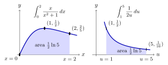
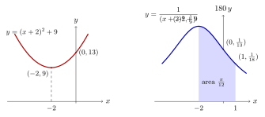

8.1 Basic Approaches¶
Guiding question
Before we meet new techniques of integration, we sharpen two tools you already own: substitution and rewriting the integrand. Substitution is the Chain Rule run backward, and this section shows exactly why it works, for indefinite and for definite integrals (where the limits must change). We then collect a table of basic formulas, derive the four trigonometric integrals that Calculus I left out (tangent, cotangent, secant, cosecant) and prove the inverse trigonometric entries by differentiating. Finally we learn the simple rewriting moves, such as splitting a fraction, long division, completing the square, trigonometric identities and multiplying by a conjugate or by \(1\) in a useful form, which often turn an unfamiliar integral into a familiar one. Later sections of this chapter add integration by parts, trigonometric integrals, trigonometric substitutions and partial fractions; each of them also begins by rewriting. Calculus I facts used here, all by name: the Chain Rule, the Fundamental Theorem of Calculus, the derivatives of the basic and inverse trigonometric functions and of \(\ln\lvert x\rvert\), and the fact that two antiderivatives on an interval differ by a constant.
By the end of this section you should be able to:
-
carry out a substitution in an indefinite or a definite integral (changing the limits) and explain why the method is valid;
-
use the table of basic integration formulas, including the four trigonometric integrals, and prove each entry;
-
split fractions, divide polynomials, complete the square, use identities, and multiply by a conjugate or by \(1\) to prepare an integrand;
-
evaluate \(\int\frac{dx}{x^2+bx+c}\) in each of its three cases;
-
check an antiderivative by differentiating it and a definite integral by a numerical value, and recognize the common errors.
The substitution method and why it works¶
An antiderivative of \(f\) on an interval \(I\) is a function \(F\) with \(F'=f\) on \(I\), and \(\int f(x)\,dx=F(x)+C\) means “\(F(x)\) plus an arbitrary constant”. By Calculus I (a consequence of the Mean Value Theorem), two antiderivatives of \(f\) on an interval differ by a constant, so this describes all of them.
Theorem 8.1.1: The substitution rule
Let \(g\) be differentiable on an interval \(J\), let \(I\) be an interval that contains \(g(J)\), and let \(f\) be continuous on \(I\).
(1) Indefinite integrals. If \(F\) is an antiderivative of \(f\) on \(I\), then \(F(g(x))\) is an antiderivative of \(f(g(x))\,g'(x)\) on \(J\), that is,
(2) Definite integrals. If in addition \(g'\) is continuous on \([a,b]\subseteq J\), then
Proof. Since \(f\) is continuous on the interval \(I\), the Fundamental Theorem of Calculus (the part that differentiates an integral) gives an antiderivative of \(f\) on \(I\): fix \(c\in I\) and put \(F(u)=\int_c^uf(s)\,ds\), so \(F'=f\).
(1) For \(x\in J\) the number \(g(x)\) lies in \(I\), so \(F(g(x))\) is defined, and the Chain Rule gives
So \(F\circ g\) is an antiderivative of \(f(g(x))g'(x)\) on \(J\). Any other antiderivative on \(J\) differs from it by a constant, which gives the displayed formula.
(2) The function \(h(x)=f(g(x))g'(x)\) is continuous on \([a,b]\), because \(g\), \(g'\) and \(f\) are continuous. By part (1), \(F\circ g\) is an antiderivative of \(h\) on \([a,b]\), so the Fundamental Theorem of Calculus (the part that evaluates an integral with an antiderivative) gives
The set \(g([a,b])\) is an interval (Intermediate Value Theorem) inside \(I\) that contains \(g(a)\) and \(g(b)\); \(f\) is continuous on it and \(F'=f\), so the same theorem gives \(\int_{g(a)}^{g(b)}f(u)\,du=F(g(b))-F(g(a))\) (also when \(g(b)<g(a)\), with the convention \(\int_p^q=-\int_q^p\)). The two integrals are equal. ◻ ∎
Notice what the proof uses and what it does not use. It uses only the Chain Rule, so substitution is the Chain Rule read backward. It does not need \(g\) to be one-to-one or increasing, and in part (2) it shows that the new limits of integration are the values \(g(a)\) and \(g(b)\). The symbols \(u=g(x)\) and \(du=g'(x)\,dx\) are bookkeeping that automate the theorem: \(\frac{du}{dx}=g'(x)\) is written as \(du=g'(x)\,dx\), and then “replace \(g(x)\) by \(u\) and \(g'(x)\,dx\) by \(du\)”.
Procedure 8.1.2: Substitution
-
Choose \(u=g(x)\), usually an inside function whose derivative (up to a constant factor) also appears in the integrand.
-
Compute \(du=g'(x)\,dx\) and rewrite everything, including \(dx\), in terms of \(u\). A missing constant factor is fine (constants move across the integral sign); a leftover \(x\) is not.
-
Indefinite integral: integrate in \(u\), then substitute \(u=g(x)\) back and add \(C\).
Definite integral: either (A) change the limits to \(u=g(a)\) and \(u=g(b)\) and finish in \(u\), never returning to \(x\), or (B) find the antiderivative in \(x\) and use the original limits. Do not mix the two. -
Check: differentiate the answer (indefinite) or compare with a numerical value (definite).
Example 8.1.3: An indefinite substitution
Find \(\int x^2\sqrt{x^3+7}\,dx\).
Solution. The expression \(x^3+7\) sits inside the root, and its derivative \(3x^2\) appears in the integrand up to the constant factor \(3\). So let \(u=x^3+7\). Then \(du=3x^2\,dx\), that is, \(x^2\,dx=\frac13\,du\). Replacing each piece,
The antiderivative of \(u^{1/2}\) is \(\frac{u^{3/2}}{3/2}=\frac23u^{3/2}\) (power rule), and in the last step \(u\) is replaced by \(x^3+7\).
Check by differentiating. By the Chain Rule,
which is the original integrand.
Example 8.1.4: A definite substitution: change the limits
Evaluate \(\int_0^2\frac{x}{x^2+1}\,dx\).
Solution. Let \(u=x^2+1\), so \(du=2x\,dx\) and \(x\,dx=\frac12\,du\). The limits belong to \(x\), so they must be converted with \(u=x^2+1\): when \(x=0\), \(u=1\); when \(x=2\), \(u=5\). Then (Theorem 8.1.1(2))
(Here \(u>0\), so \(\ln\lvert u\rvert=\ln u\), and \(\ln 1=0\).) The figure below shows the two integrals: the regions have different shapes but the same area.
Check. Method (B): \(\frac{d}{dx}\frac12\ln(x^2+1)=\frac12\cdot\frac{2x}{x^2+1}=\frac{x}{x^2+1}\), and \(\frac12\ln(2^2+1)-\frac12\ln(0^2+1)=\frac12\ln5\). A numerical integration of the original integral gives \(0.80472\), in agreement.

Pause and think 8.1.1: Substituting with a function that is not one-to-one
Use \(u=x^2\) in \(\int_{-1}^{1}xe^{x^2}\,dx\). Both limits become \(1\), so the integral in \(u\) runs from \(1\) to \(1\) and equals \(0\). Is that answer right, even though \(u=x^2\) turns the two halves of \([-1,1]\) into the same interval \([0,1]\)? Which part of the proof of Theorem 8.1.1 explains why no difficulty arises?
Answer and discussion
The answer \(0\) is right: the integrand \(xe^{x^2}\) is odd, so its integral over \([-1,1]\) is \(0\) (Example 8.1.23). The substitution rule needs only that \(u=g(x)\) is differentiable with a continuous derivative and that \(f\) is continuous on the interval that \(g\) maps onto; it does not need \(g\) to be one-to-one. In the proof, the Chain Rule shows \(F(g(x))\) is an antiderivative of \(f(g(x))g'(x)\), and the Fundamental Theorem gives \(F(g(1))-F(g(-1))=F(1)-F(1)=0\). Here the two halves of the integral cancel: one contributes \(\frac{e-1}2\) and the other \(-\frac{e-1}2\).
Example 8.1.5: A common error: the limits are not changed
A student evaluates \(\int_0^3x\sqrt{x^2+16}\,dx\) by substituting \(u=x^2+16\) and writes \(\frac12\int_0^3\sqrt u\,du=\frac12\cdot\frac23\big[u^{3/2}\big]_0^3=\frac13\cdot3\sqrt3=\sqrt3\approx1.73\). Find the mistake and give the correct value.
Solution. The limits \(0\) and \(3\) are values of \(x\), but the integral is now in \(u\), so they must be converted. This is the mistake. Correctly, \(u=x^2+16\) gives \(u=16\) at \(x=0\) and \(u=25\) at \(x=3\), and \(x\,dx=\frac12\,du\), so
because \(25^{3/2}=125\) and \(16^{3/2}=64\).
Why the first answer cannot be right. For \(0\le x\le3\) we have \(\sqrt{x^2+16}\ge4\) and \(\le5\), so \(4x\le x\sqrt{x^2+16}\le5x\) and the integral lies between \(\int_0^34x\,dx=18\) and \(\int_0^35x\,dx=\frac{45}2=22.5\). The value \(\sqrt3\) is far outside this range, and \(\frac{61}3\) is inside it. (Using method (B) gives the same result: \(\frac13(x^2+16)^{3/2}\big|_0^3=\frac13(125-64)\).)
Knowledge Check 8.1.1: New limits
Write \(\int_1^2\frac{2x}{x^2+3}\,dx\) in terms of \(u=x^2+3\), with the new limits. Do not evaluate it.
Basic integration formulas¶
The table collects the basic formulas. Formulas (1)–(10) are the derivative formulas of Calculus I read backward; each is checked by differentiating its right side (the Chain Rule contributes the factor \(\frac1a\) in the formulas with \(ax\)). Formulas (11)–(13) and (14)–(17) are proved below. Each formula holds on every interval on which its integrand is defined; \(a\ne0\) in the formulas with \(ax\) and in (11), and \(a>0\) in (12) and (13).
| (1) | \(\int k\,dx=kx+C\) | (2) | \(\int x^p\,dx=\frac{x^{p+1}}{p+1}+C,\ p\ne-1\) |
| (3) | \(\int\cos ax\,dx=\frac1a\sin ax+C\) | (4) | \(\int\sin ax\,dx=-\frac1a\cos ax+C\) |
| (5) | \(\int\sec^2ax\,dx=\frac1a\tan ax+C\) | (6) | \(\int\csc^2ax\,dx=-\frac1a\cot ax+C\) |
| (7) | \(\int\sec ax\tan ax\,dx=\frac1a\sec ax+C\) | (8) | \(\int\csc ax\cot ax\,dx=-\frac1a\csc ax+C\) |
| (9) | \(\int e^{ax}\,dx=\frac1ae^{ax}+C\) | (10) | \(\int\frac{dx}{x}=\ln\lvert x\rvert+C\) |
| (11) | \(\int\frac{dx}{a^2+x^2}=\frac1a\tan^{-1}\frac xa+C\) | (12) | \(\int\frac{dx}{\sqrt{a^2-x^2}}=\sin^{-1}\frac xa+C\) |
| (13) | \(\int\frac{dx}{x\sqrt{x^2-a^2}}=\frac1a\sec^{-1}\left\lvert\frac xa\right\rvert+C\) | (14) | \(\int\tan ax\,dx=\frac1a\ln\lvert\sec ax\rvert+C\) |
| (15) | \(\int\cot ax\,dx=\frac1a\ln\lvert\sin ax\rvert+C\) | (16) | \(\int\sec ax\,dx=\frac1a\ln\lvert\sec ax+\tan ax\rvert+C\) |
| (17) | \(\int\csc ax\,dx=-\frac1a\ln\lvert\csc ax+\cot ax\rvert+C\) |
The inverse trigonometric formulas are the derivative formulas for inverse sine, tangent and secant, written with the constant \(a\). For (10) we recall that \(\frac{d}{dx}\ln\lvert x\rvert=\frac1x\) for both signs of \(x\): for \(x<0\), \(\ln\lvert x\rvert=\ln(-x)\) has derivative \(\frac{-1}{-x}=\frac1x\).
Theorem 8.1.6: The inverse trigonometric formulas
Let \(a>0\). Then
Proof. In each case we differentiate the right side and obtain the integrand.
Tangent. By the Chain Rule and \(\frac{d}{dw}\tan^{-1}w=\frac1{1+w^2}\) with \(w=\frac xa\), \(\frac{dw}{dx}=\frac1a\):
(multiply numerator and denominator by \(a^2\)).
Sine. With \(\frac{d}{dw}\sin^{-1}w=\frac1{\sqrt{1-w^2}}\) for \(\lvert w\rvert<1\), and \(w=\frac xa\), \(\lvert x\rvert<a\):
where \(\sqrt{a^2}=a\) because \(a>0\).
Secant. First we find the derivative of \(\sec^{-1}w\) for \(w>1\). For \(w>1\), \(\theta=\sec^{-1}w\) is the angle in \(\left(0,\frac\pi2\right)\) with \(\sec\theta=w\). On this interval \(\sec\) has the derivative \(\sec\theta\tan\theta>0\), so by the derivative rule for inverse functions
because \(\tan\theta>0\) and \(\tan^2\theta=\sec^2\theta-1=w^2-1\). Now let \(\lvert x\rvert>a\) and \(F(x)=\frac1a\sec^{-1}w(x)\) with \(w(x)=\frac{\lvert x\rvert}a>1\). For \(x\ne0\) the derivative of \(\lvert x\rvert\) is \(\frac x{\lvert x\rvert}\), so \(w'(x)=\frac{x}{a\lvert x\rvert}\). By the Chain Rule, and \(\sqrt{x^2/a^2-1}=\frac{\sqrt{x^2-a^2}}a\) (since \(a>0\)),
because \(\lvert x\rvert^2=x^2\). Both signs of \(x\) are covered: for \(x<-a\) the integrand is negative and \(F\) decreases as \(x\) increases (since \(\lvert x\rvert\) decreases), in agreement with the sign of \(F'\). ◻ ∎
The absolute value in (13) matters. Without it the formula is wrong for \(x<-a\) (Example 8.1.21 computes an integral over \(x<0\)).
Pause and think 8.1.2: Two antiderivatives of \(\frac1x\)
Both \(F(x)=\ln\lvert x\rvert\) and \(G(x)=\ln\lvert x\rvert+1\) for \(x>0\) together with \(G(x)=\ln\lvert x\rvert-5\) for \(x<0\) are antiderivatives of \(\frac1x\) on \(x\ne0\). Why does this not contradict the statement that antiderivatives differ by a constant?
Answer and discussion
The statement says two antiderivatives differ by a constant on an interval. The set \(x\ne0\) is two intervals, \(x<0\) and \(x>0\), so \(F\) and \(G\) may differ by a different constant on each: here by \(1\) on \(x>0\) and by \(-5\) on \(x<0\). On each interval separately they do differ by a constant.
Theorem 8.1.7: The four trigonometric integrals
For \(a\ne0\), on every interval on which the integrand is defined,
Proof. We use \(\int\frac{du}{u}=\ln\lvert u\rvert+C\) on an interval where \(u\ne0\) (formula (10)). First take \(a=1\).
Tangent. Write \(\tan x=\frac{\sin x}{\cos x}\) and let \(u=\cos x\), \(du=-\sin x\,dx\). On an interval where \(\tan x\) is defined, \(\cos x\ne0\), so
using \(-\ln\lvert p\rvert=\ln\lvert1/p\rvert\).
Cotangent. Write \(\cot x=\frac{\cos x}{\sin x}\) and let \(u=\sin x\), \(du=\cos x\,dx\) (\(\sin x\ne0\) on the interval): \(\int\cot x\,dx=\int\frac{du}u=\ln\lvert\sin x\rvert+C\).
Secant. Multiply and divide by \(\sec x+\tan x\):
Let \(u=\sec x+\tan x\); then \(du=(\sec x\tan x+\sec^2x)\,dx\), which is exactly the numerator times \(dx\). The number \(u=\frac{1+\sin x}{\cos x}\) is never \(0\) where it is defined: it would need \(\sin x=-1\), but then \(\cos x=0\). So \(\int\sec x\,dx=\int\frac{du}u=\ln\lvert\sec x+\tan x\rvert+C\).
Cosecant. Multiply and divide by \(\csc x+\cot x\):
Let \(u=\csc x+\cot x\); then \(du=(-\csc x\cot x-\csc^2x)\,dx\), so the numerator times \(dx\) is \(-du\). Here \(u=\frac{1+\cos x}{\sin x}\ne0\) (it would need \(\cos x=-1\) and then \(\sin x=0\)). So \(\int\csc x\,dx=-\int\frac{du}u=-\ln\lvert\csc x+\cot x\rvert+C\).
General \(a\ne0\). Substitute \(v=ax\), \(dv=a\,dx\), so \(dx=\frac1a\,dv\), and use the case \(a=1\): for example \(\int\tan ax\,dx=\frac1a\int\tan v\,dv=\frac1a\ln\lvert\sec v\rvert+C=\frac1a\ln\lvert\sec ax\rvert+C\). The other three are identical. ◻ ∎
Example 8.1.8: Using the trigonometric integrals
(a) Evaluate \(\int_0^{\pi/8}\tan2x\,dx\). (b) Find \(\int\csc3x\,dx\) and check it.
Solution. (a) By the tangent formula with \(a=2\), an antiderivative is \(\frac12\ln\lvert\sec2x\rvert\). On \(\left[0,\frac\pi8\right]\) we have \(2x\in\left[0,\frac\pi4\right]\), where \(\cos2x>0\), so \(\sec2x>0\). At \(x=\frac\pi8\): \(\sec\frac\pi4=\sqrt2\) and \(\ln\sqrt2=\frac12\ln2\). At \(x=0\): \(\sec0=1\) and \(\ln1=0\). Hence
Check. On this interval \(\tan2x\) increases from \(0\) to \(1\), so the area is less than the trapezoid area \(\frac12\cdot\frac\pi8\cdot1\approx0.196\) and positive: \(0.1733\) is reasonable. A numerical integration gives \(0.17329\). (b) By the cosecant formula with \(a=3\), \(\int\csc3x\,dx=-\frac13\ln\lvert\csc3x+\cot3x\rvert+C\). Check: \(\frac{d}{dx}\left[-\frac13\ln\lvert\csc3x+\cot3x\rvert\right]=-\frac13\cdot\frac{-3\csc3x\cot3x-3\csc^23x}{\csc3x+\cot3x}\), using \(\frac{d}{dx}\ln\lvert u\rvert=\frac{u'}u\); the numerator is \(-3\csc3x(\cot3x+\csc3x)\), so the result is \(\csc3x\).
Knowledge Check 8.1.2: An integral of the cotangent
Find \(\int\cot5x\,dx\).
Rewriting the integrand¶
The hardest part of an integral is often seeing which method to use. These rewriting moves do not integrate anything, but they turn the integrand into a form that does yield, and they are the first things to try with an unfamiliar integral.
Procedure 8.1.9: Rewriting an integrand
-
Split a fraction: \(\frac{A+B}C=\frac AC+\frac BC\), then simplify each piece with the laws of exponents.
-
Long division: if \(\frac{p(x)}{q(x)}\) is a quotient of polynomials and \(\deg p\ge\deg q\), divide to write \(\frac pq=\text{quotient}+\frac{\text{remainder}}q\), where the remainder has degree less than \(\deg q\).
-
Complete the square in a quadratic: \(x^2+bx+c=\left(x+\frac b2\right)^2+\left(c-\frac{b^2}4\right)\); if the leading coefficient is \(a\ne1\), factor it out first.
-
Use an identity: \(\sin^2\theta=\frac{1-\cos2\theta}2\), \(\cos^2\theta=\frac{1+\cos2\theta}2\), \(1+\tan^2\theta=\sec^2\theta\), and so on.
-
Multiply by a conjugate or by \(1\) in a useful form: for example \(\frac1{\sqrt A+\sqrt B}\cdot\frac{\sqrt A-\sqrt B}{\sqrt A-\sqrt B}=\frac{\sqrt A-\sqrt B}{A-B}\), or \(\frac{e^x}{e^x}\) (the idea behind the integral of \(\sec x\)).
If one rewrite leads nowhere, try another; several different routes often work.
Never split a denominator
\(\frac{A}{B+C}\ne\frac AB+\frac AC\). For example \(\frac1{2^2+4}=\frac18\), but \(\frac1{4}+\frac14=\frac12\). A numerator may be split; a sum in the denominator may not.
Example 8.1.10: Three rewriting moves
Evaluate (a) \(\int_1^4\frac{x^2-2\sqrt x+5}{x}\,dx\), (b) \(\int_0^{\pi/8}\cos^22x\,dx\), (c) \(\int_0^3\frac{dx}{\sqrt{x+1}+\sqrt x}\).
Solution. (a) Split the fraction. Each term of the numerator is divided by \(x\), and \(\frac{\sqrt x}x=x^{1/2-1}=x^{-1/2}\):
because \(\int x^{-1/2}\,dx=2x^{1/2}\) and \(x>0\) on \([1,4]\). At \(x=4\) the bracket is \(8-8+5\ln4=5\ln4\); at \(x=1\) it is \(\frac12-4+0=-\frac72\). So the integral is \(5\ln4+\frac72\approx10.431\).
(b) Use an identity. With \(\theta=2x\), \(\cos^22x=\frac{1+\cos4x}2\). Then
Here \(\int\cos4x\,dx=\frac{\sin4x}4\) is formula (3) with \(a=4\), and the bracket is \(0\) at \(x=0\).
(c) Multiply by a conjugate. Multiply numerator and denominator by \(\sqrt{x+1}-\sqrt x\). The new denominator is a difference of squares, \((\sqrt{x+1})^2-(\sqrt x)^2=(x+1)-x=1\), so the integrand becomes \(\sqrt{x+1}-\sqrt x\) and
since \(4^{3/2}=8\) and \(3^{3/2}=3\sqrt3\). Check: a numerical integration of the original integrand gives \(1.20257\).
Example 8.1.11: Long division, then split
Find \(\int\frac{x^3+2x^2-x+5}{x^2+1}\,dx\).
Solution. The degree \(3\) of the numerator is at least the degree \(2\) of the denominator, so we divide. The first term of the quotient is \(x\), since \(x\cdot(x^2+1)=x^3+x\); subtracting leaves \(2x^2-2x+5\). The next term is \(2\), since \(2(x^2+1)=2x^2+2\); subtracting leaves \(-2x+3\), of degree less than \(2\), so we stop:
Split the last fraction, \(\frac{3-2x}{x^2+1}=\frac3{x^2+1}-\frac{2x}{x^2+1}\). The first piece is formula (11) with \(a=1\). For the second let \(u=x^2+1\), \(du=2x\,dx\), which gives \(\int\frac{2x}{x^2+1}\,dx=\ln(x^2+1)\) (and \(x^2+1>0\)). Therefore
Check. Differentiating gives \(x+2+\frac3{x^2+1}-\frac{2x}{x^2+1}=x+2+\frac{3-2x}{x^2+1}\), the rewritten integrand.
Example 8.1.12: Two methods, two answers
Find \(\int\frac{x}{x+3}\,dx\) in two ways, and reconcile the answers.
Solution. Method 1: substitution. Let \(u=x+3\), so \(x=u-3\) and \(dx=du\). Then
Method 2: rewriting. Since \(x=(x+3)-3\), we have \(\frac x{x+3}=1-\frac3{x+3}\) (this is what long division gives), and
Reconciling. The two antiderivatives differ by \((x+3-3\ln\lvert x+3\rvert)-(x-3\ln\lvert x+3\rvert)=3\), a constant. Both are correct (each differentiates to \(\frac x{x+3}\)) because \(C_2=C_1+3\) and the constant of integration is arbitrary. For a definite integral the constant cancels: \(\int_0^3\frac{x}{x+3}\,dx=\left[x-3\ln(x+3)\right]_0^3=(3-3\ln6)-(-3\ln3)=3-3\ln2\approx0.9206\), and with Method 1 and the new limits \(u=3\) to \(u=6\) we get \(\left[u-3\ln u\right]_3^6=(6-3\ln6)-(3-3\ln3)=3-3\ln2\).
Completing the square: the integral of \(1/(x^2+bx+c)\)¶
Completing the square rewrites \(x^2+bx+c=\left(x+\frac b2\right)^2+D\) with \(D=c-\frac{b^2}4=-\frac{b^2-4c}4\). (Expand the right side: \(x^2+bx+\frac{b^2}4+c-\frac{b^2}4\).) The sign of \(D\), that is, the sign of the discriminant \(b^2-4c\), decides the answer.
Theorem 8.1.13: The integral of the reciprocal of a quadratic
Let \(b,c\) be real, \(D=c-\frac{b^2}4\) and \(u=x+\frac b2\).
(i) If \(D>0\) (no real roots): \(\displaystyle\int\frac{dx}{x^2+bx+c}=\frac1{\sqrt D}\tan^{-1}\frac{x+b/2}{\sqrt D}+C\) for all \(x\).
(ii) If \(D=0\) (one double root \(-\frac b2\)): \(\displaystyle\int\frac{dx}{x^2+bx+c}=-\frac1{x+b/2}+C\) on each interval not containing \(-\frac b2\).
(iii) If \(D<0\) (two real roots \(r_{1,2}=-\frac b2\pm k\), where \(k=\sqrt{-D}\)): \(\displaystyle\int\frac{dx}{x^2+bx+c}=\frac1{2k}\ln\left\lvert\frac{x+b/2-k}{x+b/2+k}\right\rvert+C\) on each interval not containing a root.
Proof. In every case \(x^2+bx+c=u^2+D\) and \(\frac{du}{dx}=1\). We differentiate the right side.
(i) By the Chain Rule and \(\frac{d}{dw}\tan^{-1}w=\frac1{1+w^2}\) with \(w=\frac u{\sqrt D}\):
(ii) Here \(x^2+bx+c=u^2\) and \(\frac{d}{dx}\left(-\frac1u\right)=\frac1{u^2}\).
(iii) Here \(D=-k^2\), so \(x^2+bx+c=u^2-k^2=(u-k)(u+k)\), and on an interval where \(u-k\ne0\) and \(u+k\ne0\) we may write \(\ln\left\lvert\frac{u-k}{u+k}\right\rvert=\ln\lvert u-k\rvert-\ln\lvert u+k\rvert\). Using \(\frac{d}{dx}\ln\lvert w\rvert=\frac{w'}w\),
In each case the right side is an antiderivative, so the formula holds, with an arbitrary constant, on each interval named. ◻ ∎
In case (iii) the denominator is \(0\) at the two roots, so the real line splits into three intervals and the constant \(C\) may be different on each (Pause and think 8.1.2). For a definite integral, both limits must lie in the same interval. If the leading coefficient is \(a\ne1\), factor it out: \(\frac1{ax^2+bx+c}=\frac1a\cdot\frac1{x^2+(b/a)x+c/a}\).
Example 8.1.14: Completing the square
(a) Evaluate \(\int_{-2}^{1}\frac{dx}{x^2+4x+13}\). (b) Evaluate \(\int_{-2}^{-1/2}\frac{dx}{\sqrt{5-4x-x^2}}\).
Solution. (a) Add and subtract \(\left(\frac42\right)^2=4\): \(x^2+4x+13=(x^2+4x+4)+9=(x+2)^2+9\). Let \(u=x+2\), \(du=dx\); the limits become \(u=0\) (at \(x=-2\)) and \(u=3\) (at \(x=1\)). By formula (11) with \(a=3\),
Check: a numerical integration gives \(0.26180\). The figure below shows why: the quadratic \((x+2)^2+9\) never drops below \(9\), so its reciprocal is a bell-shaped curve with a maximum \(\frac19\) at \(x=-2\).
(b) The quantity under the root is \(5-4x-x^2=-(x^2+4x)+5=-\big((x+2)^2-4\big)+5=9-(x+2)^2\). Let \(u=x+2\); the limits become \(u=0\) and \(u=\frac32\). By formula (12) with \(a=3\),
The integrand is defined for \(-5<x<1\) (where \(9-(x+2)^2>0\)), and both limits lie in this interval.

Left: the shifted quadratic \(y=(x+2)^2+9\). Right: its reciprocal and the area \(\frac\pi{12}\) found in (a); the vertical axis shows \(180\,y\) so that the two curves have comparable heights, and the labels give the true values of \(y\).
Knowledge Check 8.1.3: Completing the square
Evaluate \(\int\frac{dx}{x^2-10x+34}\) and check the answer by differentiating.
Pause and think 8.1.3: Arctangent or logarithm?
The integrands \(\frac1{x^2+2x+5}\) and \(\frac1{x^2+2x-3}\) look alike, yet their antiderivatives look completely different. What single feature of the quadratic decides which kind of answer you get, and what does it say about the graph of \(y=x^2+bx+c\)?
Answer and discussion
The sign of \(D=c-\frac{b^2}4\), equivalently of the discriminant \(b^2-4c\). For \(x^2+2x+5\): \(D=4>0\), no real roots, the parabola stays above the axis, and the integrand is continuous everywhere with an arctangent antiderivative \(\frac12\tan^{-1}\frac{x+1}2\). For \(x^2+2x-3=(x+3)(x-1)\): \(D=-4<0\), two real roots \(-3\) and \(1\) where the integrand blows up, and the antiderivative \(\frac14\ln\left\lvert\frac{x-1}{x+3}\right\rvert\) is a logarithm that is defined separately on three intervals.
Looking ahead¶
Substitution and rewriting handle many integrals, but not all. The product \(x\,e^x\), for example, has no obvious substitution; that product is the subject of integration by parts. Powers of sine and cosine together, roots of \(a^2-x^2\), and rational functions whose denominators factor are handled by trigonometric integrals, trigonometric substitutions and partial fractions. Later sections also treat integrals that cannot be done in closed form at all (numerical integration) and integrals over infinite intervals (improper integrals); you will meet the latter again when we study the convergence of infinite series, and Taylor polynomials will explain how large the error of a numerical rule can be.
Example bank¶
What’s in this bank. Ten further worked examples, grouped by problem type and ordered from easiest to hardest within each group.
-
Group 1: substitution (including a definite integral with a negative interval).
-
Group 2: rewriting the integrand (exponentials, a conjugate in disguise).
-
Group 3: completing the square (logarithm case, and a linear numerator).
-
Group 4: table formulas on a negative interval, and long division plus completing the square.
-
Group 5: proofs.
Group 1: Substitution¶
Example 8.1.15: A logarithm on a negative interval
Evaluate \(\int_{-3}^{-1}\frac{dx}x\).
Solution. The integrand is continuous on \([-3,-1]\) (it is undefined only at \(0\)). An antiderivative on \(x<0\) is \(\ln\lvert x\rvert\), since \(\frac{d}{dx}\ln\lvert x\rvert=\frac1x\). Therefore
Check. The integrand is negative on the interval, so the answer must be negative; the interval has length \(2\) and \(\frac1x\) runs from \(-\frac13\) to \(-1\), so the answer lies between \(-2\) and \(-\frac23\). Common error: writing \(\ln x\) gives \(\ln(-1)-\ln(-3)\), which is not defined.
Example 8.1.16: A nested root
Evaluate \(\int_1^4\frac{dx}{\sqrt x\,(1+\sqrt x)^2}\).
Solution. Let \(u=1+\sqrt x\). Then \(du=\frac1{2\sqrt x}\,dx\), so \(\frac{dx}{\sqrt x}=2\,du\). The limits become \(u=1+1=2\) and \(u=1+2=3\). Hence
Check: numerical integration gives \(0.33333\).
Group 2: Rewriting the integrand¶
Example 8.1.17: Exponentials in the denominator
Find \(\int\frac{dx}{e^x-e^{-x}}\) for \(x>0\).
Solution. Multiply numerator and denominator by \(e^x\): \(\frac1{e^x-e^{-x}}=\frac{e^x}{e^{2x}-1}\). Let \(u=e^x\), \(du=e^x\,dx\). Then the integral is \(\int\frac{du}{u^2-1}\). By Theorem 8.1.13(iii) with \(b=0\), \(c=-1\), \(k=1\), and \(u>1\) because \(x>0\),
Check. \(\frac{d}{dx}\frac12\left[\ln(e^x-1)-\ln(e^x+1)\right]=\frac12\left(\frac{e^x}{e^x-1}-\frac{e^x}{e^x+1}\right)=\frac12\cdot\frac{2e^x}{e^{2x}-1}=\frac{e^x}{e^{2x}-1}\), the rewritten integrand.
Example 8.1.18: Multiplying by a conjugate
Evaluate \(\int_0^{\pi/4}\frac{dx}{1+\sin x}\).
Solution. Multiply numerator and denominator by \(1-\sin x\). The denominator becomes \(1-\sin^2x=\cos^2x\), so
Now \(\int\sec^2x\,dx=\tan x\) and \(\int\sec x\tan x\,dx=\sec x\) (formulas from the table), so an antiderivative is \(\tan x-\sec x\) and
Check: numerical integration gives \(0.58579\).
Group 3: Completing the square¶
Example 8.1.19: A quadratic with two real roots
Evaluate \(\int_5^7\frac{dx}{x^2-6x+8}\).
Solution. \(x^2-6x+8=(x-3)^2-1\) (add and subtract \(3^2=9\)). With \(u=x-3\) this is \(u^2-1\), the case \(k=1\) of Theorem 8.1.13(iii), so an antiderivative is \(\frac12\ln\left\lvert\frac{x-4}{x-2}\right\rvert\). (Check of the factors: the roots are \(2\) and \(4\), and \(u\mp1=x-3\mp1\).) Both limits lie in the interval \(x>4\), to the right of both roots, so
Check: numerical integration gives \(0.29389\).
Example 8.1.20: A linear numerator
Evaluate \(\int_0^1\frac{6x+5}{x^2+2x+5}\,dx\).
Solution. The derivative of the denominator is \(2x+2\). Write the numerator as a multiple of it plus a constant: \(6x+5=3(2x+2)-1\). Then
In the first integral let \(u=x^2+2x+5>0\), \(du=(2x+2)\,dx\): it equals \(3\ln(x^2+2x+5)\). In the second, \(x^2+2x+5=(x+1)^2+4\), and Theorem 8.1.13(i) with \(D=4\) gives \(\frac12\tan^{-1}\frac{x+1}2\). So an antiderivative is \(F(x)=3\ln(x^2+2x+5)-\frac12\tan^{-1}\frac{x+1}2\), and
Check. Differentiating \(F\): \(\frac{3(2x+2)}{x^2+2x+5}-\frac12\cdot\frac{1/2}{1+(x+1)^2/4}=\frac{6x+6}{x^2+2x+5}-\frac{1}{x^2+2x+5}=\frac{6x+5}{x^2+2x+5}\). Numerical integration gives \(1.24914\).
Group 4: Table formulas and combinations¶
Example 8.1.21: The secant formula on a negative interval
Evaluate \(\int_{-8}^{-5}\frac{dx}{x\sqrt{x^2-16}}\).
Solution. Formula (13) with \(a=4\) gives the antiderivative \(\frac14\sec^{-1}\left\lvert\frac x4\right\rvert\), valid for \(\lvert x\rvert>4\), and the interval \([-8,-5]\) lies in \(x<-4\). At \(x=-5\): \(\left\lvert\frac{-5}4\right\rvert=\frac54\) and \(\sec^{-1}\frac54=\cos^{-1}\frac45\). At \(x=-8\): \(\left\lvert\frac{-8}4\right\rvert=2\) and \(\sec^{-1}2=\frac\pi3\). Hence
Check. For \(x<0\) the integrand is negative (a negative \(x\) times a positive root), so a negative answer is right. Without the absolute value, \(\frac14\sec^{-1}\frac x4\) would need \(\sec^{-1}\) of a negative number, which is a different branch and gives the wrong sign. Numerical integration gives \(-0.10092\).
Example 8.1.22: Long division, then completing the square
Evaluate \(\int_0^1\frac{x^2+x+3}{x^2+2x+2}\,dx\).
Solution. The numerator and denominator have the same degree, so divide: \(x^2+x+3=1\cdot(x^2+2x+2)+(1-x)\), hence \(\frac{x^2+x+3}{x^2+2x+2}=1+\frac{1-x}{x^2+2x+2}\). The derivative of the denominator is \(2x+2\), and \(1-x=-\frac12(2x+2)+2\) (since \(-\frac12(2x+2)=-x-1\)). So
using \(x^2+2x+2=(x+1)^2+1\). Integrating each piece (the middle one with \(u=x^2+2x+2\), which is positive):
Then \(F(1)=1-\frac12\ln5+2\tan^{-1}2\) and \(F(0)=-\frac12\ln2+2\cdot\frac\pi4\), so
Check. \(F'(x)=1-\frac{x+1}{x^2+2x+2}+\frac2{x^2+2x+2}=\frac{x^2+2x+2-x-1+2}{x^2+2x+2}=\frac{x^2+x+3}{x^2+2x+2}\). Numerical integration gives \(1.18536\).
Group 5: Proofs¶
Example 8.1.23: Integrals of odd functions
Prove that if \(f\) is continuous and odd on \([-a,a]\) (that is, \(f(-x)=-f(x)\)), then \(\int_{-a}^af(x)\,dx=0\). Use it to evaluate \(\int_{-2}^2\frac{x^3}{x^4+1}\,dx\).
Plan. Split at \(0\) and substitute \(u=-x\) in one half.
Proof. Write \(\int_{-a}^af=\int_{-a}^0f+\int_0^af\). In the first integral let \(u=-x\), so \(du=-dx\); when \(x=-a\), \(u=a\), and when \(x=0\), \(u=0\). By Theorem 8.1.1 (definite form) and \(f(-u)=-f(u)\),
(The second step reverses the limits, which changes the sign.) Hence \(\int_{-a}^af=-\int_0^af+\int_0^af=0\). ◻ ∎
The function \(f(x)=\frac{x^3}{x^4+1}\) is continuous on \([-2,2]\) and odd, because \(f(-x)=\frac{-x^3}{x^4+1}=-f(x)\), so the integral is \(0\). Check: with \(u=x^4+1\) an antiderivative is \(\frac14\ln(x^4+1)\), which has the same value at \(x=2\) and \(x=-2\).
Example 8.1.24: An integral found by differentiation
Prove that for \(a>0\), \(\displaystyle\int\frac{dx}{\sqrt{x^2+a^2}}=\ln\left(x+\sqrt{x^2+a^2}\right)+C\).
Plan. Differentiate the right side; also check that the logarithm’s argument is positive.
Proof. Since \(\sqrt{x^2+a^2}>\sqrt{x^2}=\lvert x\rvert\ge-x\), we have \(x+\sqrt{x^2+a^2}>0\) for all \(x\), so the logarithm is defined (and no absolute value is needed). By the Chain Rule,
Thus the right side is an antiderivative of the integrand on the whole line. ◻ ∎
For example, with \(a=1\) and \(x=2\) the derivative is \(\frac1{\sqrt5}\approx0.4472\).
Answers and discussion¶
Knowledge Check 8.1.1. Let \(u=x^2+3\), \(du=2x\,dx\). At \(x=1\), \(u=4\); at \(x=2\), \(u=7\). Then \(\int_1^2\frac{2x}{x^2+3}\,dx=\int_4^7\frac{du}u=\ln7-\ln4=\ln\frac74\approx0.5596\).
Knowledge Check 8.1.2. By the cotangent formula with \(a=5\): \(\int\cot5x\,dx=\frac15\ln\lvert\sin5x\rvert+C\). Check: \(\frac15\cdot\frac{5\cos5x}{\sin5x}=\cot5x\).
Knowledge Check 8.1.3. \(x^2-10x+34=(x-5)^2+9\), so \(D=9>0\) and \(\sqrt D=3\): \(\int\frac{dx}{x^2-10x+34}=\frac13\tan^{-1}\frac{x-5}3+C\). Check: \(\frac13\cdot\frac1{1+(x-5)^2/9}\cdot\frac13=\frac1{9+(x-5)^2}=\frac1{x^2-10x+34}\).